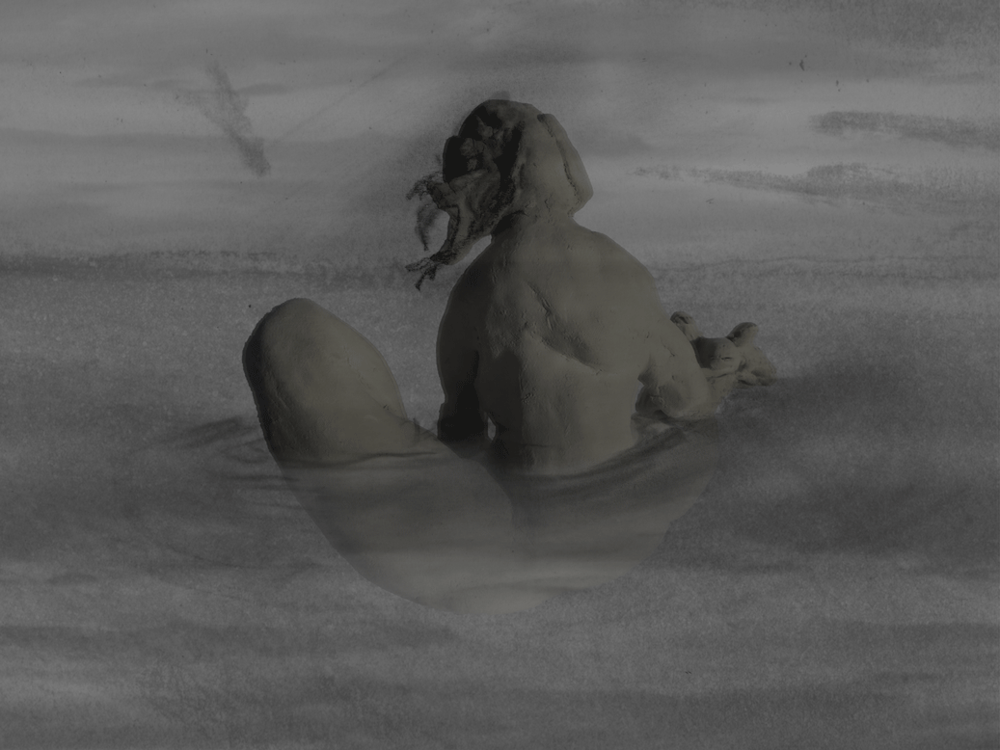
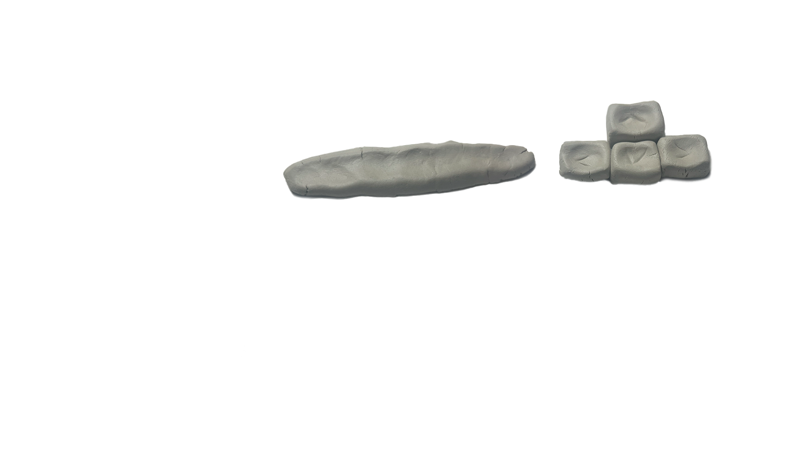

procesfolio
‘niemandsland’ is een experimenteel videospel over ronddwalen, constante verandering en dissonantie.
Ontstaan uit materiaal- en zielsonderzoek, gekenmerkt door analoge animatie, stop-motion en flarden poëzie.
Dit videospel is een onderzoek naar digitaal zelf-publiceren en ingaan tegen de typische game.
Ik probeerde dit jaar een multidisciplinaire aanpak van illustratie te verkennen.
De rauwe beelden, vervreemdende soundscapes en belichaamde taal maken tot een donkere, existentialistische en immersieve ervaring.

